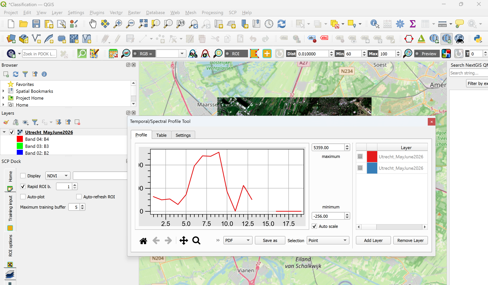
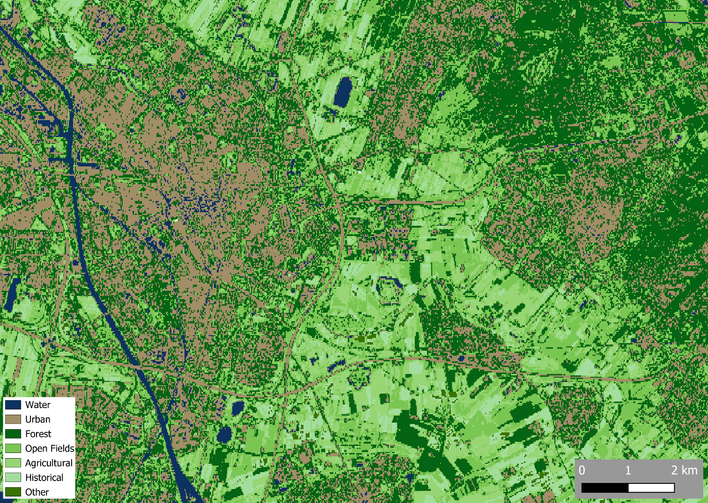
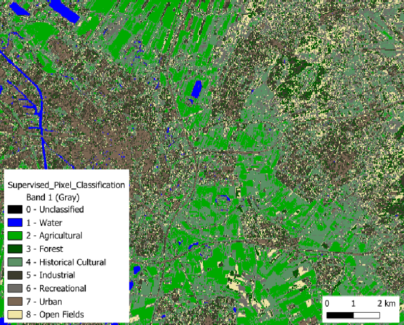

Assignment 5: Image Classification
Software Used: QGIS
Course Context & Objective
For this assignment, we worked on classifying different types of land use based on the different spectral signatures obtained with remote sensing. The goal was to use data from Sentinel 2 satellites to classify urban, recreation, historical, agricultural, etc. land plots and create a map where each land use type has a specific color.
Technical Skills Learned
- Obtaining satellite imagery from Google Earth Engine.
- Assigning different RGB values to different bands.
- Analyzing spectral profiles.
- Calculating how accurate our data is by using a confusion matrix.
- Using polygons and points to classify different land use types.
- Using supervised and unsupervised learning to categorize data with an algorithm.
Results & Analysis
The maps below show different land uses around Utrecht. The area was broken down into 7 categories (Water, Urban, Forest, Open Fields, Agricultural Land, Historical and Other). The first part of the assignment involved using supervised learning to categorize the land into these pre-defined categories. This led to a detailed and fairly accurate map, but it was quite time consuming. The second part of the assignment involved re-classifying the same area, but this time with unsupervised learning. Although this part of the assignment was quicker, it led to a map that was less accurate, and many of the categories were either incorrect or it was hard to determine what the algorithm had actually found.
I chose to do this assignment in QGIS instead of using ArcGIS, as an extra challenge. The first parts of the assignment went fine, but I ended up getting stuck on the NDVI section. Despite attempting this part for a few hours, I was never able to produce an NDVI map of the area. I was met with multiple error messages that I was unable to solve.
Being able to classify land by using algorithms like this was very interesting, and I can clearly see how useful this can be, especially on a large scale, where manual human classification would take years. For this specific assignment, I found the results a bit disappointing because they weren't very detailed or accurate. However, I am confident that with higher resolution satellite imagery, more sample data, and more polygons classified by hand, these algorithms can be far more accurate.
Answer to Assignment Questions
1) Mapping every single tree, field, and body of water in a city by hand would take weeks of work. Automated land cover classification allows us to categorize this land use in a few minutes or hours thanks to computer algorithms that process large areas in much less time than humans would. In supervised classification, a human gives the computer a few cleaned up, labeled data points to the software, and the computer applies these labels to the rest of the data. In unsupervised classification, humans simply tell the computer how many categories it wants the data to be divided into. The algorithm groups data based on specific categories (in this case, spectral characteristics). Once it is done, the human has to figure out what each category means, and whether or not it’s relevant.
2) The pixels represented 18.5 meters by 30 meters. This slightly differed between students, and my guess is that this depends on the type of projection used in QGIS (or ArcGIS).
The images for questions 3-7 are attached below.
8) A confusion matrix compares the classified map with the known data that was confirmed by ground-truthing. By comparing the classified data and the true data at a specific location, the matrix is able to determine how accurate the classification is, and whether or not it represents the real world. A producer error is when a feature in the real world is not shown in the map. If a forest is classified as grassland, then that forest was omitted and that qualifies as a producer error. A user error is when the map claims something is there, but to the user, it is not. For example, if you find a water fountain on a map but you show up and it’s not there in real life, then that’s user error.
9) I could not obtain an NDVI. I tried my best, but I kept getting error messages which I was unable to resolve.
10) Supervised classification is very accurate and gives the creator a lot more control over the classes that will come as output. However, it can be time consuming for humans to create a clean dataset, and a messy dataset will lead to a messy output. Unsupervised classification has a faster setup than supervised classification because it requires no prior knowledge of an area, and no prior cleanup. However, I found it to be less accurate, and it gets easily confused with certain pixels, especially in urban areas. In my case, it created 5 different classes on the roof of Utrecht Centraal, which is obviously incorrect. I was unable to make the NDVI work, so I cannot comment on that.


